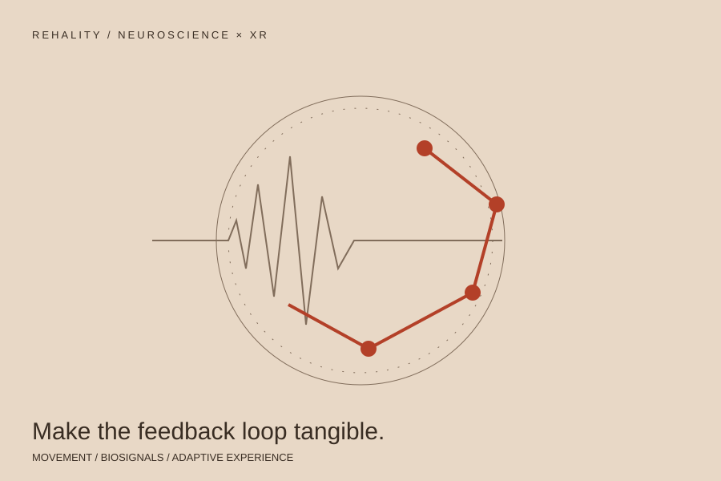

REHALITY / NEUROSCIENCE & XR
From the nervous system
to an interactive system.
Post-stroke rehabilitation research at the intersection of neuroscience, extended reality, machine learning, and real-time biosignal feedback.
- MY ROLE
- Project lead & co-founder
- PERIOD
- 2017–2022
- SCOPE
- Research translation · XR · Consortium leadership

THE CONTEXT
The problem to work on.
Rehabilitation research connects several kinds of expertise: the clinical question, the person moving, the signals being measured, and the interface that responds. Rehality brought those disciplines together in adaptive prototypes and clinical study design.
MY CONTRIBUTION
Where I took responsibility.
Connect signals to interactive prototypes.
Worked with XR, machine learning, EEG, EMG, and eye tracking to develop real-time biosensor feedback for post-stroke rehabilitation research.
Bring the disciplines together.
Led a four-partner consortium across academic, clinical, engineering, and industry expertise, and helped secure BMBF grant funding.
Keep research and application connected.
Combined adaptive prototyping with clinical study design. This work sat alongside my doctoral training in neural and behavioral sciences at the University of Tübingen and Max Planck Institute.
WHAT CAME OUT OF IT
From intention to evidence.
The contribution here is research translation, prototype development, and consortium leadership. These are not claims of established patient benefit or clinical efficacy.
SOURCES & FURTHER READING
This brief is based on my professional record. Roles and figures are reported in my CV.